TRIP OVERVIEW
Day 1 – St Paul's Cathedral · Monument to the Great Fire · Sky Garden
Day 2 – Cutty Sark · Painted Hall · Royal Observatory
Day 3 – Kew Gardens
Day 4 – National Gallery · National Portrait Gallery · Banqueting House
Day 5 – Leighton House · Holland Park & Kyoto Garden · Natural History Museum
Day 6 – 🚆 Train Day — Cambridge
Day 1
🏨 From Hotel: 🚶 40 min · 🚕 12 min → St Paul's Cathedral
1. St Paul's Cathedral
↳ Christopher Wren's baroque masterpiece completed after the Great Fire destroyed its medieval predecessor. The dome — third largest in the world — defines London's skyline. The Whispering Gallery · Stone Gallery · and Golden Gallery climb 528 steps to panoramic views. Wellington and Nelson are buried in the crypt.

🚶 8 min · 🚕 3 min
2. Monument to the Great Fire
↳ A Doric column 202 feet tall — exactly the distance from its base to the bakery in Pudding Lane where the Great Fire of 1666 started. Designed by Wren and Hooke · it is the world's tallest isolated stone column. Climbing the 311 steps rewards with close-up views of the City's financial towers.
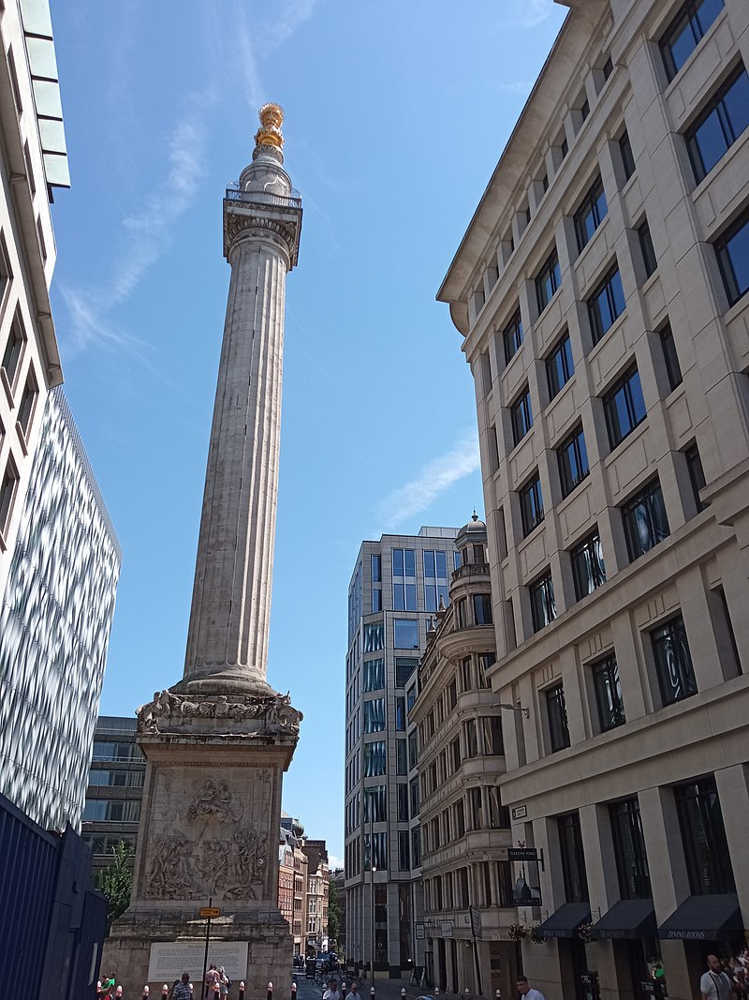
🚶 5 min · 🚕 2 min
3. Sky Garden
↳ London's highest public garden occupies the top three floors of 20 Fenchurch Street — the so-called Walkie-Talkie skyscraper. The open-air terrace at 155 metres delivers a 360° panorama taking in the Shard · Tower Bridge · St Paul's dome · and the Thames. Entry is free but requires advance booking.
🏛️ Monday - Friday 10:00am - 6:00pm · Saturday - Sunday 11:00am - 9:00pm
⏰ ~1h
🆓 Free
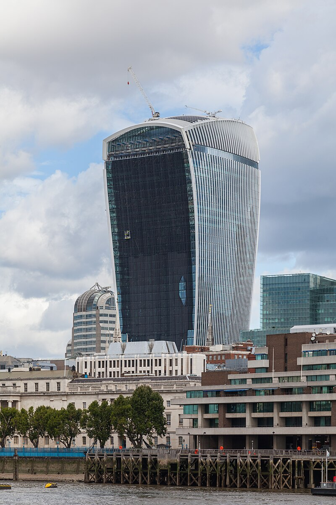
🚶 38 min · 🚕 10 min → hotel
Day 2
🏨 From Hotel: 🚕 35 min → Cutty Sark
1. Cutty Sark
↳ The world's last surviving tea clipper · launched in 1869 · once raced from China to London in under 100 days. Dry-docked in Greenwich since 1954 · it now stands as a museum ship — visitors can walk the main deck · explore the lower hold · and stand beneath the copper hull suspended three metres above the ground.
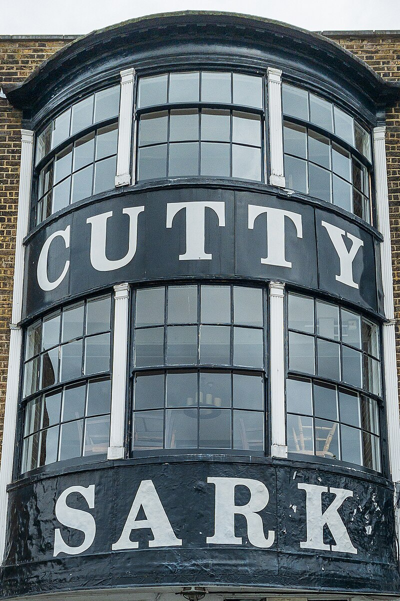
🚶 5 min · 🚕 2 min
2. Painted Hall
↳ Called England's Sistine Chapel · the Painted Hall at the Old Royal Naval College is an overwhelming baroque interior by James Thornhill · painted between 1707 and 1726. The ceiling celebrates British sea power through allegory · with William III and Mary II enthroned at the apex. Nelson lay in state here in 1805.
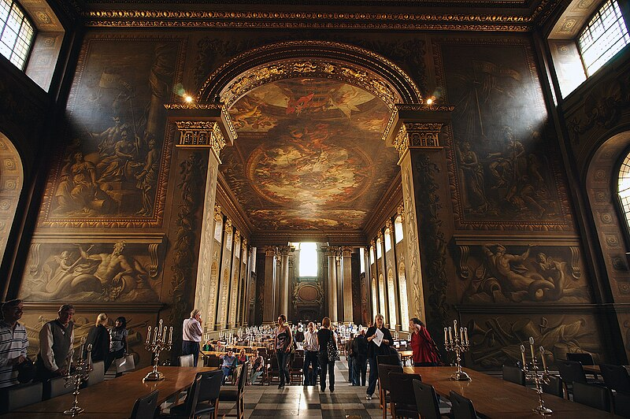
🚶 12 min · 🚕 5 min
3. Royal Observatory
↳ Built by Charles II in 1675 to solve the problem of longitude at sea · the Royal Observatory sits atop Greenwich Hill with commanding views of the Thames. The Prime Meridian — longitude 0° — runs through the courtyard. The red Time Ball drops daily at 1pm · a signal sailors used to set their chronometers.
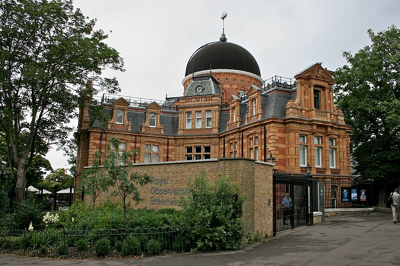
🚕 35 min → hotel
Day 3
🏨 From Hotel: 🚕 35 min → Kew Gardens
1. Kew Gardens
↳ The Royal Botanic Gardens at Kew hold the world's largest collection of living plants — over 50,000 species across 132 hectares. The Victorian Palm House recreates a tropical rainforest under its iron-and-glass dome. The Great Pagoda · Treetop Walkway · and Japanese Garden are equally distinctive.
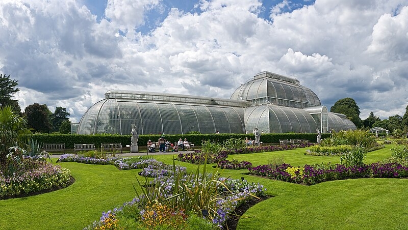
🚕 35 min → hotel
Day 4
🏨 From Hotel: 🚶 28 min · 🚕 10 min → National Gallery
1. National Gallery
↳ One of the world's great art museums — over 2300 Western European paintings from the 13th to 19th centuries. Botticelli and da Vinci through Rembrandt · Vermeer · Velázquez · Turner · and Van Gogh. The gallery occupies the neoclassical Wilkins building on Trafalgar Square. Entry is free.
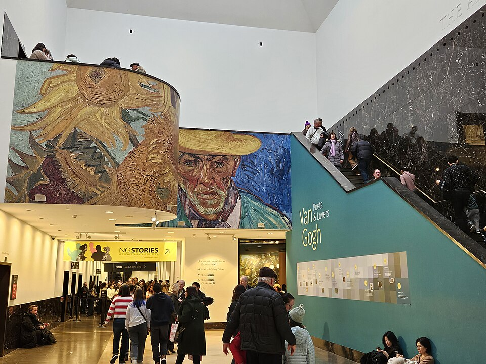
🚶 3 min · 🚕 2 min
2. National Portrait Gallery
↳ The world's first national portrait gallery · founded in 1856 next door to the National Gallery. Over 225,000 portraits record British history through the faces of those who shaped it — from the Tudors to the present day. The collection spans painting · photography · drawing · and sculpture. Entry is free.
🏛️ Monday - Wednesday 10:00am - 6:00pm · Thursday - Friday 10:00am - 9:00pm · Saturday - Sunday 10:00am - 6:00pm
⏰ ~1.5h
🆓 Free
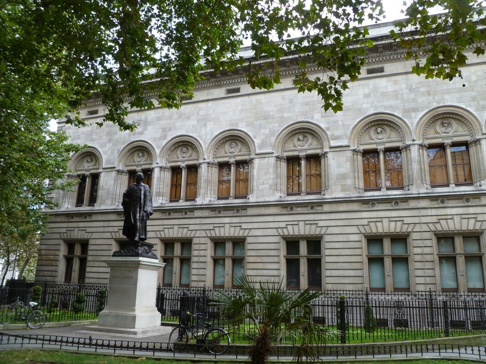
🚶 12 min · 🚕 5 min
3. Banqueting House
↳ The only surviving fragment of the Palace of Whitehall · burned in 1698. Inigo Jones completed this Palladian masterpiece in 1622 — England's first Renaissance building. Its great hall is crowned by a Rubens ceiling commissioned by Charles I · who stepped through a window to his execution here in 1649.
🏛️ Thursday - Monday 10:00am - 4:00pm
🚫 Closed Tuesday - Wednesday
⏰ ~1h
⚠️ Restricted access — open on two Open Days only: 29 May and 26 Jun · and Thursday - Monday 10:00am - 4:00pm from 1 Aug to 20 Sep only.
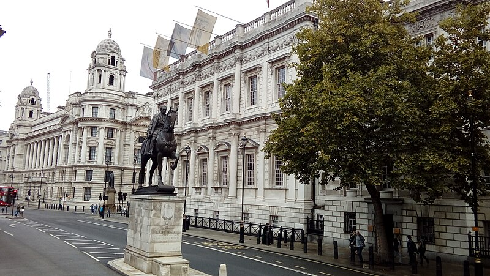
🚶 15 min · 🚕 6 min → hotel
Day 5
🏨 From Hotel: 🚕 18 min → Leighton House
1. Leighton House
↳ The studio-home of Victorian painter Frederic Lord Leighton — one of England's most extraordinary interiors. The Arab Hall is lined with Moorish tiles collected in Syria · Egypt · and Rhodes · under a gilded dome with carved wooden lattice. Every room is a work of art assembled over thirty years.
🏛️ Wednesday - Monday 10:00am - 5:30pm
🚫 Closed Tuesday
⏰ ~1.5h
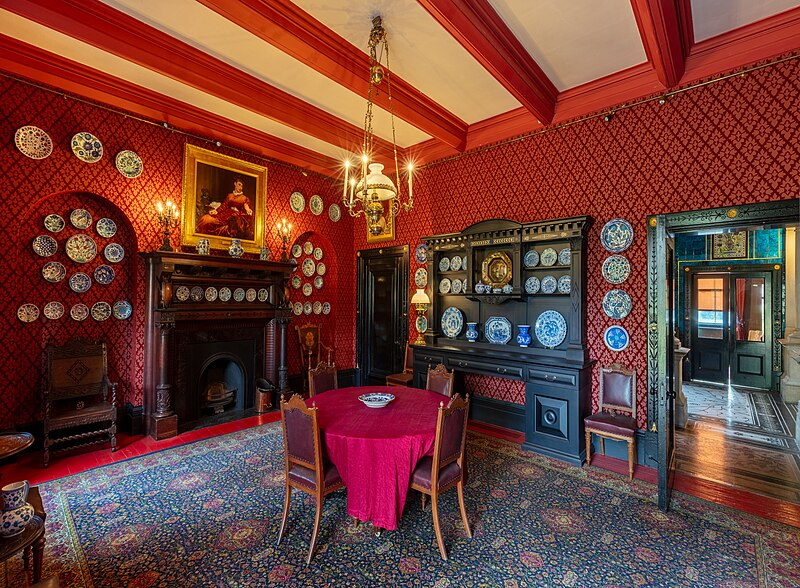
🚶 5 min · 🚕 2 min
2. Holland Park & Kyoto Garden
↳ Holland Park is one of London's most intimate parks — peacocks roam the grounds around the ruins of Jacobean Holland House. The Kyoto Garden was gifted by Kyoto in 1991: a classical Japanese garden with a stone waterfall · koi pond · stone lanterns · and maples. In autumn the foliage rivals any Japanese garden.
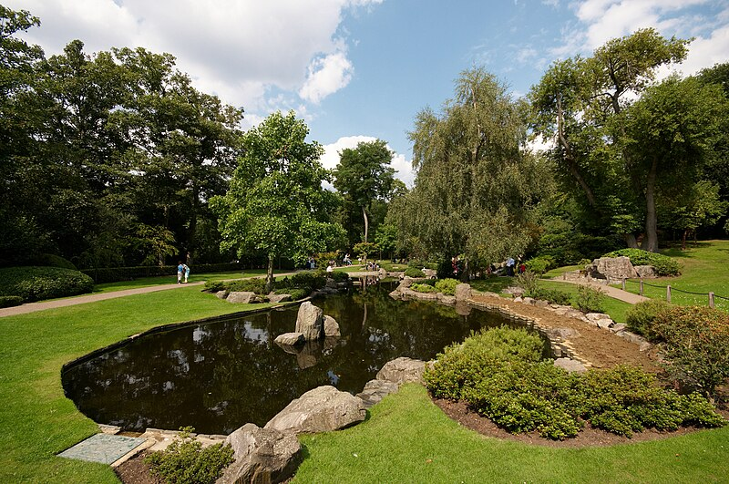
🚕 15 min
3. Natural History Museum
↳ One of the world's great natural history collections — 80 million specimens in Alfred Waterhouse's spectacular Romanesque-Gothic terracotta palace. The blue whale skeleton in Hintze Hall · the dinosaur galleries · and the Darwin Centre are the defining experiences. Entry is free.
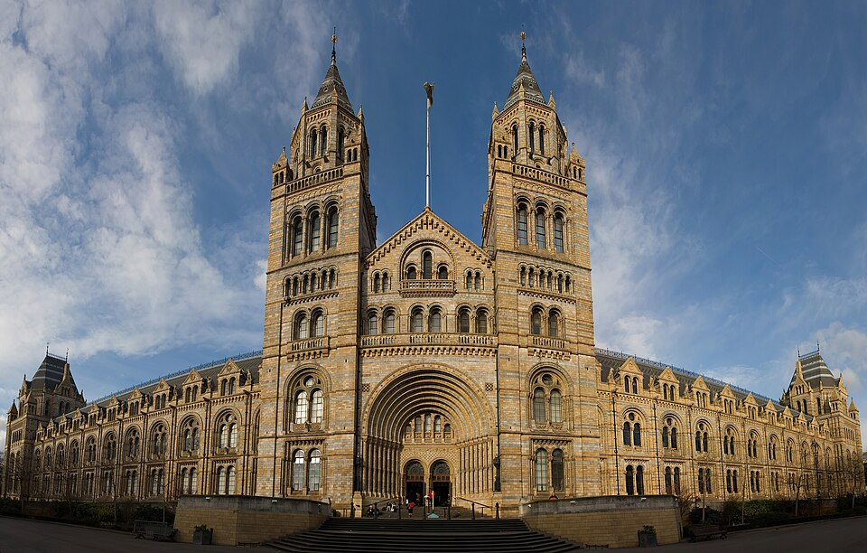
🚕 18 min → hotel
Day 6 – Train Day — Cambridge
🏨 From Hotel: 🚕 15 min → King's Cross
🚊 London King's Cross → Cambridge · Thameslink / Great Northern · 50 min
🎫 book at: thetrainline.com
8:30am London King's Cross 9:21am Cambridge
9:00am London King's Cross 9:51am Cambridge
9:30am London King's Cross 10:21am Cambridge
🚉 ARRIVE Cambridge: 🚶 30 min · 🚕 8 min → King's College Chapel
1. King's College Chapel
↳ The supreme achievement of English Gothic architecture · built between 1446 and 1544. The fan-vaulted ceiling — the largest in the world — spans the chapel without internal supports. Rubens' Adoration of the Magi hangs above the altar. The Christmas Eve Festival of Nine Lessons and Carols originates here.
🏛️ Monday - Saturday 9:30am - 3:30pm · Sunday 1:15pm - 2:30pm
⏰ ~1h
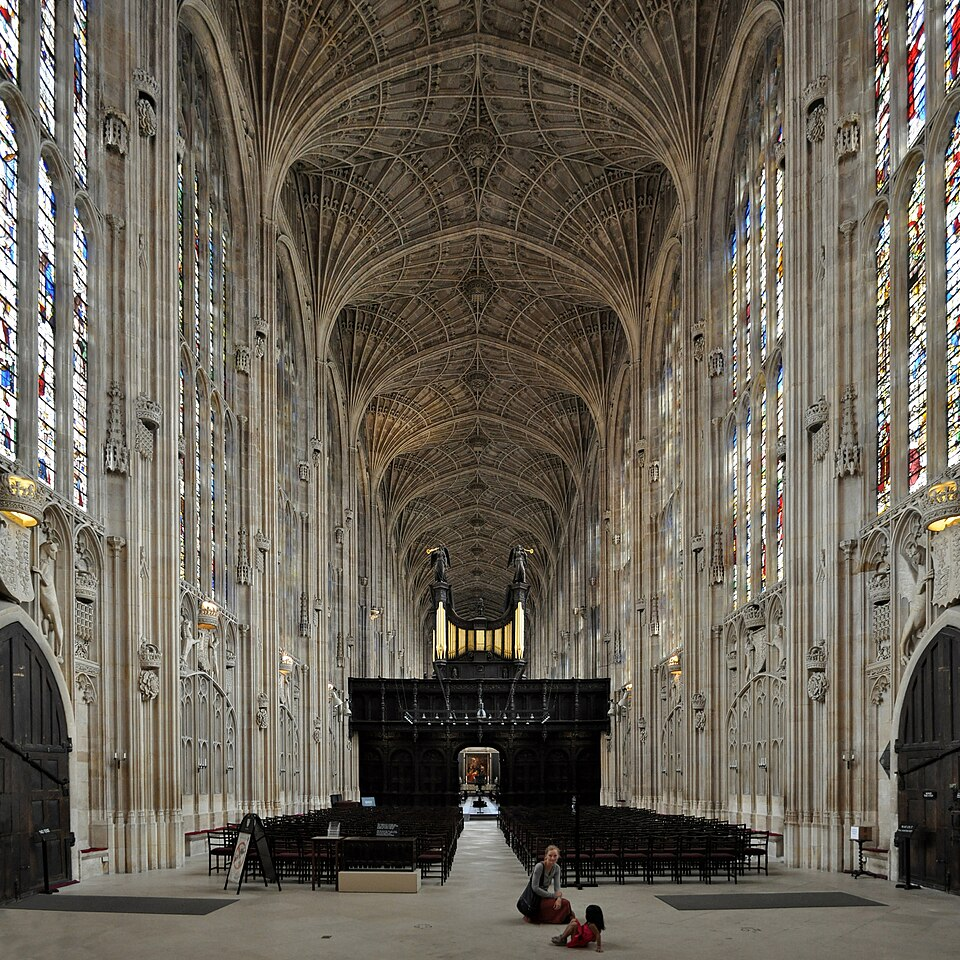
🚶 5 min · 🚕 2 min
2. The Backs
↳ The lawns along the River Cam behind the great Cambridge colleges — King's · Clare · Trinity · St John's. The view of King's College Chapel rising above the meadows is one of the most photographed in England. Punting from the Backs is the definitive Cambridge experience; hire a punt at Silver Street Bridge.
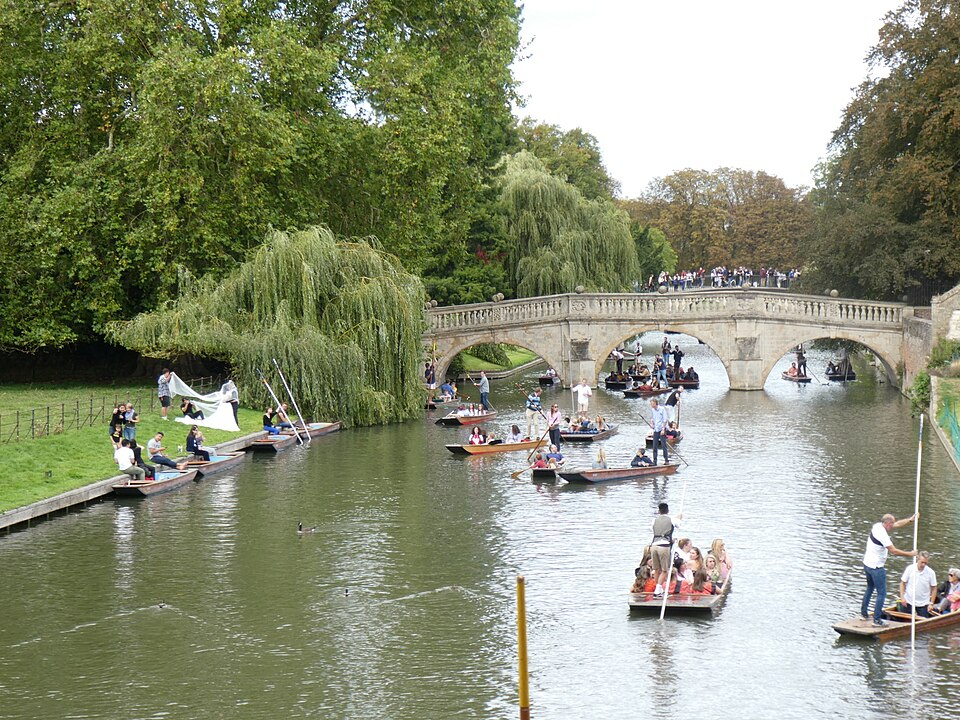
🚶 10 min · 🚕 3 min
3. Fitzwilliam Museum
↳ Cambridge's great art and antiquities museum · founded in 1816 with a bequest from Viscount Fitzwilliam. The collection spans ancient Egypt · Greece · and Rome · through medieval manuscripts · European paintings from Titian to Cézanne · and one of England's finest print collections. Entry is free.
🏛️ Tuesday - Saturday 10:00am - 5:00pm · Sunday 12:00pm - 5:00pm
🚫 Closed Monday
⏰ ~1.5h
🆓 Free
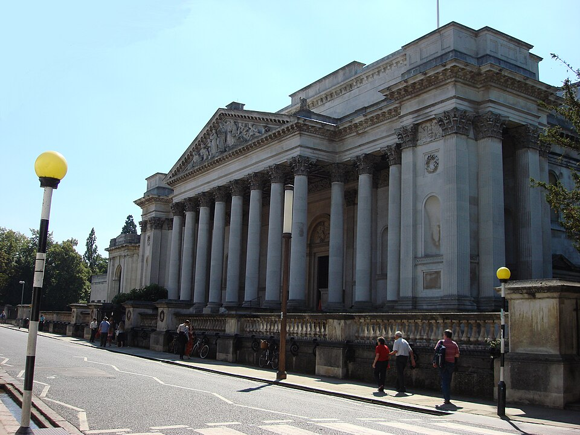
🚶 8 min · 🚕 3 min
4. Great St Mary's Church
↳ The university church of Cambridge · built in Perpendicular Gothic between 1478 and 1519. For centuries it served as parish church and senate house — graduation ceremonies took place here. Climb the tower for the finest elevated view of the city: King's Chapel · the market square · and the college rooflines.
No pictures found.
🚶 30 min · 🚕 8 min → Cambridge station
🚊 Cambridge → London King's Cross · Thameslink / Great Northern · 50 min
🎫 book at: thetrainline.com
4:30pm Cambridge 5:20pm London King's Cross
5:00pm Cambridge 5:50pm London King's Cross
5:30pm Cambridge 6:20pm London King's Cross
🚉 ARRIVE London King's Cross: 🚶 32 min · 🚕 15 min → hotel
🗓️ Weekly Closures
Historic Houses · Closed Tuesday
📅 Tours
Viator
↳ A small-group walk through the City's oldest taverns — from a medieval monks' drinking hole to a Shakespeare-era pub in a hidden alley. The guide covers 800 years of London drinking culture · politics · and gossip.
🕐 6:00pm · ⏳ 3.5 hr · 👥 small group
🚶 40 min · 🚕 12 min
↳ A small-group walk timed to the Changing of the Guard ceremony — the guide explains the regiment history · uniform symbolism · and the mechanics of the ceremony that tourists often miss while jostling for position.
🕐 10:00am · ⏳ 2 hr · 👥 small group
🚶 10 min · 🚕 4 min
↳ A 50-minute blast down the Thames on a rigid inflatable boat — past the Millennium Dome · Tower Bridge · and Canary Wharf at 30+ knots. The commentary is sharp · irreverent · and expertly timed to the sights flying past.
🕐 10:00am · ⏳ 50 min · 👥 small group
🚶 20 min · 🚕 7 min
↳ A small-group coach day trip covering four or five honey-stone villages — Bourton-on-the-Water · Burford · Bibury — with a local guide who knows which lanes the tourists miss.
🕐 8:00am · ⏳ 9.5 hr · 👥 small group
🏨 ↔ 🚐
↳ A guided visit to the actual sets · props · and costumes used to film all eight Harry Potter movies at Leavesden Studios — the Great Hall · Dumbledore's office · Diagon Alley · and the Hogwarts model. Transport from central London included.
🕐 8:00am · ⏳ 6 hr · 👥 small group
🏨 ↔ 🚐
GetYourGuide
↳ An evening small-group walk through the Whitechapel streets where the Ripper operated in 1888 — the guide covers the victims · the police investigation · and the media frenzy that made this the world's first modern murder mystery.
🕐 7:30pm · ⏳ 2 hr · 👥 small group
🚕 15 min
↳ A 4-hour guided walk covering 30 of London's most iconic landmarks — from Buckingham Palace to the Thames — with a local guide whose commentary connects the sights into a coherent narrative of the city.
🕐 10:00am · ⏳ 4 hr · 👥 small group
🚶 28 min · 🚕 10 min
↳ A 90-minute expert-led tour of the National Gallery's greatest masterworks — from the Arnolfini Portrait through Velázquez · Rembrandt · Turner · and Van Gogh — with an art historian who puts each painting in context.
🕐 10:00am · ⏳ 1.5 hr · 👥 small group
🚶 28 min · 🚕 10 min
↳ A small-group walk through the city's hidden courtyards · medieval lanes · and overlooked history — the London the guidebooks pass over. Every alley has a story the guide has spent years finding.
🕐 10:00am · ⏳ 2 hr · 👥 small group
🚶 28 min · 🚕 10 min
↳ An early morning guided food walk through Borough Market — London's oldest market trading since 1276 — sampling artisan cheese · fresh oysters · salt beef · and Monmouth coffee with a local food expert who knows every stall by name and every supplier by story.
🕐 9:00am · ⏳ 3 hr · 👥 small group
🚶 35 min · 🚕 12 min
TripAdvisor
↳ Small-group walking tours tracing 2000 years of London history — from Roman foundations through the Great Fire · the plague · and the Blitz — led by guides whose depth of knowledge sets them apart from the standard circuit.
🕐 10:00am · ⏳ 2 hr · 👥 small group
🚶 28 min · 🚕 10 min
↳ A small-group coach tour through the Cotswolds' most photogenic villages — Arlington Row in Bibury · Bourton-on-the-Water · and the market town of Chipping Campden — with a knowledgeable guide and hotel-area departure.
🕐 8:00am · ⏳ 9 hr · 👥 small group
🏨 ↔ 🚐
↳ Transport from London to the Warner Bros. Leavesden Studios for the Making of Harry Potter — the original sets · costumes · props · and the Hogwarts scale model used in all eight films. Return transport included.
🕐 8:00am · ⏳ 9 hr · 👥 small group
🏨 ↔ 🚐
↳ The original Ripper walk — London Walks guides have been running this route through Whitechapel since 1981. Covers the murder sites · the police investigation · and the cultural impact of the case that made Jack a household name.
🕐 7:30pm · ⏳ 2 hr · 👥 small group
🚕 15 min
↳ A small-group walk through London's hidden courtyards · medieval passages · and overlooked corners — alleyways that predate the Great Fire still threaded between the modern city. Led by a specialist guide with deep archival knowledge.
🕐 10:30am · ⏳ 2 hr · 👥 small group
🚶 40 min · 🚕 12 min
☕ Cappuccino
Notes Coffee Roasters · 4.4⭐ · 580+ reviews
🏛️ Monday - Friday 7:30am - 7:00pm · Saturday 8:00am - 7:00pm · Sunday 10:00am - 6:00pm
🚶 10 min · 🚕 4 min
The Espresso Room · 4.5⭐ · 350+ reviews
🏛️ Monday - Friday 8:00am - 5:00pm · Saturday 9:00am - 4:00pm
🚫 Closed Sunday
🚶 12 min · 🚕 5 min
Monmouth Coffee · 4.6⭐ · 1400+ reviews
Watchhouse Seven Dials · 4.5⭐ · 480+ reviews
The Attendant · 4.4⭐ · 920+ reviews
🫕 Restaurants Near Hotel
Quaglino's · 4.3⭐ · 650+ reviews
↳ Modern European · Grand Art Deco brasserie since 1929 — cinematic room.
🏛️ Daily 12:00pm - 11:00pm
🚶 5 min · 🚕 2 min
45 Jermyn St · 4.3⭐ · 720+ reviews
↳ British · Art Deco dining room above Fortnum & Mason — all-day brasserie.
🏛️ Monday - Friday 12:00pm - 10:00pm · Saturday 10:00am - 10:00pm
🚫 Closed Sunday
🚶 7 min · 🚕 3 min
Franco's · 4.3⭐ · 580+ reviews
↳ Italian · St James's institution since 1946 — classic Roman cooking.
🏛️ Monday - Friday 12:00pm - 10:00pm · Saturday 12:00pm - 10:30pm
🚫 Closed Sunday
🚶 8 min · 🚕 3 min
The Wolseley · 4.4⭐ · 4200+ reviews
↳ European · Grand Viennese café on Piccadilly — all-day brasserie.
🏛️ Monday - Friday 7:00am - 11:00pm · Saturday - Sunday 8:00am - 11:00pm
🚶 10 min · 🚕 5 min
Brasserie Zédel · 4.4⭐ · 3100+ reviews
↳ French · Parisian brasserie in a Beaux-Arts basement — prix-fixe value.
🏛️ Monday - Saturday 11:30am - 11:00pm · Sunday 11:30am - 4:00pm
🚶 18 min · 🚕 7 min
🍽️ Downtown Restaurants
Twenty8 Nomad · 4.4⭐ · 320+ reviews
↳ Modern American Brasserie · Brasserie at the Nomad Hotel — retractable roof.
🏛️ Daily 7:00am - 11:00pm
Clos Maggiore · 4.4⭐ · 1200+ reviews
↳ Classic French · Romantic — Provençal room · open fireplace · precise cooking.
🏛️ Monday - Saturday 12:00pm - 2:30pm · 5:00pm - 10:30pm · Sunday 12:00pm - 2:30pm · 5:00pm - 10:00pm
Frog by Adam Handling · 4.5⭐ · 420+ reviews
↳ Modern British · Adam Handling’s flagship tasting menus · Covent Garden’s best.
🏛️ Tuesday - Saturday 12:00pm - 2:00pm · 6:00pm - 9:30pm
🚫 Closed Sunday - Monday
Flat Iron Covent Garden · 4.3⭐ · 2200+ reviews
↳ British Steakhouse · Flat iron cut · dripping chips · always full.
🏛️ Daily 11:30am - 10:30pm
Vasiniko · 4.4⭐ · 580+ reviews
↳ Modern Greek · Ingredient-forward · convivial · best of Covent Garden.
🏛️ Monday - Saturday 12:00pm - 10:30pm
🚫 Closed Sunday
🍮 Local Tastes
Full English Breakfast
↳ Bacon · eggs · sausage · black pudding · beans · grilled tomato · toast — the definitive English fry-up eaten at a Formica counter with strong tea. London's oldest greasy-spoon cafés do it best; avoid hotel versions.
Fish & Chips
↳ Battered cod or haddock with thick-cut chips · malt vinegar · salt · and mushy peas — Britain's national dish. The batter should be crisp · the fish fresh · the chips fat. Avoid tourist-strip chippies; seek out third-generation operators.
Afternoon Tea
↳ Finger sandwiches · scones with clotted cream and jam · petit fours · and a pot of tea — served between 3:00pm and 5:00pm in grand hotel dining rooms. The ritual has not changed in 180 years. Book weeks ahead at the classic addresses.
Pie & Mash
↳ Working-class East End staple since the 1860s — minced beef pie with mashed potato and liquor: a parsley-and-eel-broth sauce. Still served at Victorian-tiled pie-and-mash shops that have not changed since the Victorian era.
📍 M. Manze · G. Kelly's
🎭 Shows, Performances & Concerts
Royal Opera House
↳ Home to the Royal Opera and the Royal Ballet — world-class productions in a magnificent Victorian auditorium. One of Europe's three great opera houses.
🚶 28 min · 🚕 10 min
Shakespeare's Globe
↳ A faithful 1599 replica on the South Bank — open-air summer season in the yard and Sam Wanamaker Playhouse in winter. Shakespeare as first staged.
🚶 40 min · 🚕 15 min
Barbican Centre
↳ Europe's largest multi-arts centre — resident home of the London Symphony Orchestra · with classical concerts · theatre · dance · cinema · and exhibitions.
🚕 15 min
Wigmore Hall
↳ The world's premier chamber music venue — a jewel-box Edwardian recital hall with near-perfect acoustics and the finest ensembles on earth.
🚶 22 min · 🚕 8 min
🚌 Getting Around
🚕 Uber
🚕 Black Cabs
🚎 Tram
↳ Tramlink runs through Croydon in South London — well outside the centre.
London has a tram system — operated by Transport for London. No tram rides on this trip.
🚝 Tube
↳ Nearest: Gloucester Road · District · Circle · Piccadilly · 5 min walk.
London has a metro — operated by Transport for London. No metro rides planned.
🚆 Train Stations Near Hotel
🚊 Charing Cross
Southeastern, Southern → Kent, Surrey, South London. No high-speed — transfer to St Pancras.
🚶 18 min · 🚕 6 min
🚄 St Pancras International
Thameslink, Great Northern → Cambridge, Bedford, Luton Airport · Eurostar → Paris, Brussels, Amsterdam.
🚶 32 min · 🚕 12 min
⛲️ Day Trips by Train
Canterbury · 55 min
↳ England's most sacred city — Canterbury Cathedral has been a pilgrimage destination since Thomas Becket's murder in 1170. The medieval city walls · the ruins of St Augustine's Abbey · and the Cathedral quarter are a UNESCO World Heritage Site.
🎫 book at: thetrainline.com or Omio
Oxford · 1h
↳ England's oldest university city — the Bodleian Library · Radcliffe Camera · Christ Church · and the Covered Market. A city of spires and colleges that rewards an afternoon of wandering as much as any museum visit.
🎫 book at: thetrainline.com or Omio
Brighton · 1h
↳ England's most exuberant seaside city — the Royal Pavilion · the Brighton Lanes · a pebble beach · and the oldest operating electric railway in the world. The unofficial capital of English eccentricity.
🎫 book at: thetrainline.com or Omio
Winchester · 1h
↳ England's medieval capital — Winchester Cathedral holds Jane Austen's grave and medieval mortuary chests; the Great Hall displays the Arthurian Round Table. Direct trains via Waterloo.
🎫 book at: thetrainline.com or Omio
Stratford-upon-Avon · 2h
↳ Shakespeare's birthplace — the half-timbered house on Henley Street · Holy Trinity Church where he is buried · and the Royal Shakespeare Company theatre on the Avon. A small market town that rewards a full day.
🎫 book at: thetrainline.com or Omio
⭐ Michelin Restaurants
⭐⭐⭐ Mauro Colagreco at Raffles London at The OWO
↳ Contemporary European — three-star tasting menu at Raffles London at The OWO.
🚶 10 min · 🚕 4 min
⭐⭐⭐ 1890 by Gordon Ramsay
↳ Modern European — three-star at The Savoy · Gordon Ramsay's most refined room.
🚶 14 min · 🚕 5 min
⭐⭐⭐ Alain Ducasse at The Dorchester
↳ French — the benchmark for classical French cuisine in London; most formal room.
🚶 25 min · 🚕 7 min
⭐⭐⭐ Dinner by Heston Blumenthal
↳ Modern British — historically-inspired tasting menu at the Mandarin Oriental.
🚶 30 min · 🚕 9 min
⭐⭐⭐ Core by Clare Smyth
↳ Modern British — Clare Smyth's flagship; produce-led · technically precise.
🚕 16 min
Not shown: 13 ⭐⭐ · 65 ⭐ more in London
Skipping: Westminster Abbey · British Museum · Stonehenge · Churchill War Rooms · Buckingham Palace · Tower of London · Windsor Castle · Bath